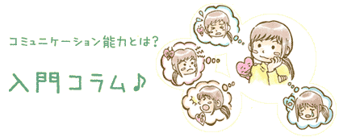
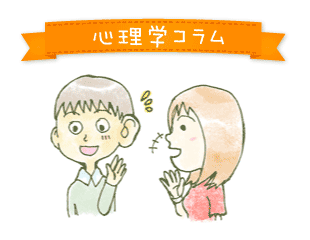
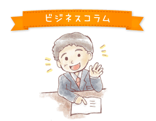

～メンタルヘルスを語る上で重要！～
どんな状況がストレスになるか？ストレスの特性を明らかにし、認知の面から解消法を紹介しちゃいます！


【コミュニケーションと心のあり方】
～まずは心のありかたから～
コミュニケーション能力は心のあり方に左右されます。
「人と接したい」「相手を話がしたい」という気持ちがとても大事です。そんな心のあり方についての紹介と、アイデンティティ、性格など心理学でも基本となる概念の説明も加えてあります。
【コミュニケーション能力】
～コミュニケーションを学ぶにはまずここから～
良好な人間関係にはコミュニケーション能力が欠かせません。そのコミュニケーション能力を高めるための基本的な要素を身につけていきましょう。

【チームコミュニケーション】
チームでプロジェクトを進めるというのはビジネスでは良くある事。 そのときどのようなコミュニケーションをとればスムーズな意志の疎通が出来るか？
優れたチームワークとは何か？
●ダイレクトコミュニケーション
●ダイコミュ通信教材